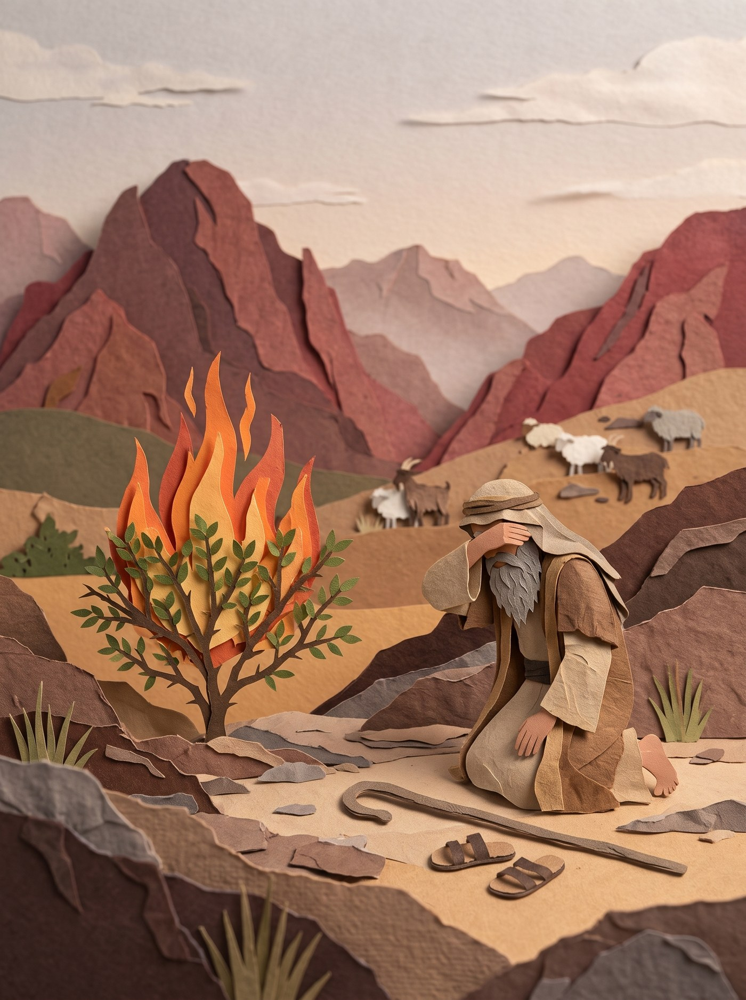
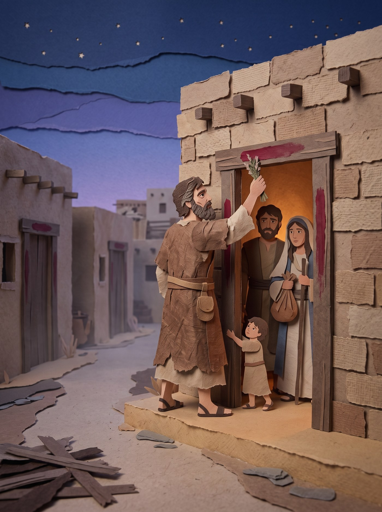
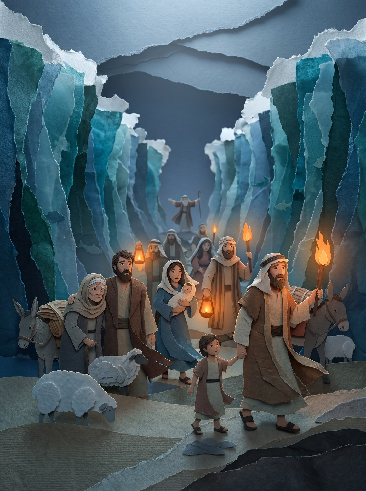

Capítulo 4
Moisés y la noche de la Pascua
Parte I: la promesa · Éxodo 1–14; Levítico 16; Números 20–21; Deuteronomio 34
La escena
Recreación: así pudo haber sido. Los hechos están en Éxodo 1 a 14, Levítico 16, Números 20 y 21 y Deuteronomio 34. Lo que pensaban y sentían se imagina a partir del texto y de lo que se sabe de la época.
Un rey que no conocía a José
Pasan cuatro siglos. La familia de Jacob, que bajó a Egipto con hambre y fue recibida como invitada de honor, ya no es una familia. Es un pueblo. Se han multiplicado tanto que llenan la tierra de Gosén, en el delta del Nilo, donde el río se abre en brazos antes de llegar al mar.
Y en Egipto ya nadie se acuerda de José.
La Biblia lo dice en una sola línea, y en esa línea cabe toda la tragedia que viene: se levantó sobre Egipto un nuevo rey que no conocía a José (Éx 1:8). Para ese rey, los hebreos no son la familia del hombre que salvó a Egipto del hambre. Son extranjeros. Demasiados. Un peligro.
Entonces hace lo que hacen los poderosos cuando tienen miedo: los aplasta. Les pone capataces. Los pone a fabricar ladrillos para sus ciudades de almacenaje, Pitón y Ramesés. Barro del Nilo, paja, agua, el molde de madera, el sol encima. Miles de ladrillos al día. Una espalda doblada desde que sale el sol hasta que se pone.
«Y amargaron su vida con dura servidumbre, en hacer barro y ladrillo, y en toda labor del campo» (Éx 1:14).
Y como el pueblo sigue creciendo, el faraón da la orden más cruel que puede dar un rey:
«Echad al río a todo hijo que nazca, y a toda hija preservad la vida» (Éx 1:22).
Piensa en eso un momento. En una madre hebrea que escucha llorar a su recién nacido y sabe que ese llanto lo puede delatar. En los soldados que pasan por la calle. En el río, que da vida a todo Egipto, convertido en tumba de bebés.
Una arquilla de juncos
En una de esas casas nace un niño. Es hermoso, dice la Biblia, y su madre lo esconde. Un mes. Dos. Tres. Cada vez que el niño llora, ella lo aprieta contra el pecho. Cada ruido afuera le para el corazón.
Hasta que ya no puede más.
«Pero no pudiendo ocultarle más tiempo, tomó una arquilla de juncos y la calafateó con asfalto y brea, y colocó en ella al niño y lo puso en un carrizal a la orilla del río» (Éx 2:3).
Lo pone en el mismo río donde el faraón mandó tirar a los niños. Pero no lo tira. Lo entrega. Con sus propias manos le cierra la tapa de juncos, lo empuja despacio entre los carrizos, y lo deja en manos de Dios. Su hija mayor, una niña, se queda escondida entre las cañas, mirando de lejos qué va a pasar.
Y pasa lo que nadie hubiera imaginado. Baja al río a bañarse la hija del faraón. Ve la arquilla. La manda traer. La abre. Y el niño llora. Ella siente compasión, y entiende enseguida que es uno de los niños de los hebreos.
La hermanita sale de entre las cañas, valiente, y le ofrece buscarle una nodriza hebrea. Y trae a su propia madre. Así, la mujer que tuvo que soltar a su hijo en el río lo recibe otra vez en brazos, y ahora le pagan por criarlo.
Cuando el niño crece, lo lleva al palacio. La princesa lo adopta, «y le puso por nombre Moisés, diciendo: Porque de las aguas lo saqué» (Éx 2:10).
El niño que el faraón quería ahogado crece en la casa del faraón. Dios tiene un sentido del humor muy serio.
El príncipe que mató
Moisés crece como príncipe de Egipto. Esteban, siglos después, lo resume así: fue enseñado en toda la sabiduría de los egipcios, y era poderoso en palabras y en obras (Hch 7:22). Escritura, números, leyes, el arte de mandar. Ropa de lino, comida de palacio.
Pero hay algo que el palacio no le pudo quitar. Sabe quién es. Sabe de dónde viene.
A los cuarenta años sale a ver a sus hermanos. Los ve doblados en el barro, bajo el sol. Y ve a un egipcio que golpea a un hebreo. Algo se le revienta por dentro.
«Entonces miró a todas partes, y viendo que no parecía nadie, mató al egipcio y lo escondió en la arena» (Éx 2:12).
Miró a todas partes. Ese detalle lo dice todo. Sabía que lo que iba a hacer estaba mal, o por lo menos que no debía verlo nadie. Quiso hacer justicia con sus propias manos, a escondidas, a su manera.
Al día siguiente sale otra vez y ve a dos hebreos peleándose. Quiere poner paz, y uno de ellos le responde con desprecio: quién lo puso a él de príncipe y juez, si piensa matarlo como mató al egipcio (Éx 2:14). Moisés se queda frío. Lo saben. El faraón se entera y lo manda a buscar para matarlo.
Y el príncipe de Egipto huye. Cruza el desierto solo, hacia el oriente, hasta la tierra de Madián. Se sienta junto a un pozo. Ya no tiene palacio, ni nombre, ni pueblo. Los egipcios lo quieren muerto. Los hebreos no lo quieren de jefe.
Cuarenta años con ovejas
En Madián lo recibe un sacerdote llamado Jetro. Moisés se casa con una de sus hijas, tiene un hijo, y le pone un nombre que es casi un suspiro: Gersón, que suena a «forastero allí», porque, dice, «Forastero soy en tierra ajena» (Éx 2:22).
Y se queda. Cuarenta años más (Hch 7:30). El hombre que fue educado para gobernar Egipto pasa la mitad de su vida cuidando ovejas ajenas en el desierto. Sol, piedras, silencio. Noches enteras mirando las estrellas, oyendo balar al rebaño. ¿Pensaría en su madre? ¿En el egipcio enterrado en la arena? ¿En el pueblo que dejó atrás?
Mientras tanto, en Egipto, el pueblo sigue gimiendo. Y la Biblia dice que ese gemido llegó hasta Dios, y que Dios se acordó de su pacto con Abraham, con Isaac y con Jacob (Éx 2:23-24). No se había olvidado. Nunca se olvida.
Un día, Moisés lleva las ovejas más allá del desierto, hasta Horeb, el monte de Dios. Y ve algo raro.
«Y se le apareció el Ángel de Jehová en una llama de fuego en medio de una zarza; y él miró, y vio que la zarza ardía en fuego, y la zarza no se consumía» (Éx 3:2).

Un arbusto del desierto ardiendo, y no se quema. Moisés se acerca a mirar. Y desde el fuego, una voz lo llama por su nombre. Dos veces: «¡Moisés, Moisés!» (Éx 3:4).
Hacía cuarenta años que nadie lo llamaba así, con esa fuerza.
«No te acerques; quita tu calzado de tus pies, porque el lugar en que tú estás, tierra santa es» (Éx 3:5).
Un viejo pastor de ochenta años, descalzo en la arena caliente, tapándose la cara porque tiene miedo de mirar a Dios. Y Dios le dice lo que nadie le había dicho en toda su vida:
«Bien he visto la aflicción de mi pueblo que está en Egipto, y he oído su clamor a causa de sus exactores; pues he conocido sus angustias» (Éx 3:7).
He visto. He oído. He conocido. Dios no es un dios lejano que no se entera. Conoce las angustias. Las conoce por dentro.
Y le dice que lo va a mandar a él, a Moisés, al faraón, para sacar a su pueblo de Egipto.
«¿Quién soy yo para que vaya a Faraón, y saque de Egipto a los hijos de Israel?» (Éx 3:11).
Es la pregunta de un hombre quebrado. Cuarenta años antes se creía capaz de liberar a su pueblo con sus propias manos. Ahora no se cree capaz de nada. Y Dios no le contesta diciéndole quién es Moisés. Le contesta diciéndole quién está con él. Moisés le pregunta su nombre, qué les va a decir a los israelitas cuando le pregunten quién lo envía. Y Dios responde:
«YO SOY EL QUE SOY. Y dijo: Así dirás a los hijos de Israel: YO SOY me envió a vosotros» (Éx 3:14).
Guarda ese nombre. YO SOY. Lo vamos a escuchar otra vez, muchos siglos después, en boca de alguien que caminaba por Galilea.
Su lucha. Moisés no quiere ir. Y no es humildad bonita: es miedo. Pone excusas, una detrás de otra. Que no le van a creer. Que quién es él. Y al final saca la que más le duele: «¡Ay, Señor! nunca he sido hombre de fácil palabra, ni antes, ni desde que tú hablas a tu siervo; porque soy tardo en el habla y torpe de lengua» (Éx 4:10). El príncipe que era poderoso en palabras ahora se siente torpe para hablar. Cuarenta años de ovejas le enseñaron el silencio. Dios le responde que Él hizo la boca del hombre, y que va a estar con su boca. Y Moisés, sin más argumentos, dice lo que de verdad siente: «¡Ay, Señor! envía, te ruego, por medio del que debes enviar» (Éx 4:13). Manda a otro. A cualquiera menos a mí. Dios se enoja, pero no lo descarta. Le da a su hermano Aarón para que hable por él. Y lo manda igual. Así es la lucha de Moisés, de principio a fin: un hombre con un temperamento que una vez lo llevó a matar, con un pasado que lo persigue, con una boca que no le responde, y con un pueblo que lo va a hacer renegar cuarenta años más. Moisés no es un héroe de mármol. Es un hombre cansado al que Dios no suelta.
¿Quién es Jehová?
Moisés vuelve a Egipto. Ochenta años, una vara de pastor en la mano y su hermano al lado. Entra al palacio donde se crió, y le dice al faraón que el Dios de Israel le manda dejar ir a su pueblo.
Y el faraón se ríe.
«¿Quién es Jehová, para que yo oiga su voz y deje ir a Israel? Yo no conozco a Jehová, ni tampoco dejaré ir a Israel» (Éx 5:2).
En vez de soltarlos, les quita la paja para los ladrillos. Que la busquen ellos, y que hagan la misma cantidad. Los capataces hebreos son golpeados. El pueblo maldice a Moisés. Y Moisés le reclama a Dios por qué lo mandó, si todo está peor que antes.
Entonces llegan las plagas. El Nilo convertido en sangre. Ranas, piojos, moscas. El ganado muerto. Úlceras. Granizo. Langostas que se comen todo lo verde. Tres días de oscuridad tan espesa que se puede palpar. Nueve golpes, uno tras otro, contra los dioses de Egipto: el río sagrado, el sol que adoraban, la tierra fértil de la que estaban tan orgullosos. Y nueve veces el faraón endurece su corazón.
Queda una sola plaga. La más terrible. Y esta vez, Dios va a pasar por Egipto a medianoche.
La noche de la Pascua
Imagina a un padre hebreo. Uno cualquiera. Un hombre con las manos curtidas por el barro y la espalda llena de marcas.
Diez días antes de esa noche, Moisés les dio una instrucción extraña: «En el diez de este mes tómese cada uno un cordero según las familias de los padres, un cordero por familia» (Éx 12:3). No cualquier cordero. Tiene que ser perfecto: «El animal será sin defecto, macho de un año» (Éx 12:5).
Así que el padre va al rebaño y busca el mejor. Lo revisa entero: las patas, los ojos, la lana, que no cojee, que no tenga una herida. Y lo lleva a la casa.
Y el cordero vive con ellos cuatro días. Del diez al catorce del mes. Los niños le ponen nombre. Le dan de comer en la mano. Duerme en un rincón de la casa, y por la mañana bala pidiendo agua. El hijo menor lo abraza del cuello. Cuatro días es suficiente para encariñarse.
Y llega la tarde del día catorce. Entre las dos tardes, cuando el sol empieza a bajar, todas las familias de Israel, al mismo tiempo, sacrifican a su cordero. Se oye en todo Gosén. Los niños lloran. No entienden por qué tiene que morir el cordero que no hizo nada.
Y ese es justamente el punto. El cordero no hizo nada.
El padre recoge la sangre en una vasija. Toma un manojo de hisopo, una planta pequeña, de ramitas finas, que sirve como brocha. Y sale a la puerta de su casa.
«Y tomad un manojo de hisopo, y mojadlo en la sangre que estará en un lebrillo, y untad el dintel y los dos postes con la sangre» (Éx 12:22).
Le tiembla el pulso. Sabe lo que va a pasar esa noche. Moisés lo dijo: a medianoche, el primogénito de cada casa de Egipto va a morir. Y él tiene un primogénito. Está ahí, detrás de él, mirándolo pintar la puerta.
Primero un poste. Después el otro. Después arriba, en el dintel. La sangre del cordero escurriendo por la madera.

Y la promesa que lo sostiene es una sola:
«Y la sangre os será por señal en las casas donde vosotros estéis; y veré la sangre y pasaré de vosotros, y no habrá en vosotros plaga de mortandad cuando hiera la tierra de Egipto» (Éx 12:13).
Veré la sangre. No dice: veré lo buenos que son. No dice: veré si se portaron bien. Dentro de esas casas había hebreos que habían renegado de Dios, que habían maldecido a Moisés, que tenían el corazón tan duro como cualquier egipcio. Lo que los salva esa noche no es su bondad. Es la sangre en la puerta.
Entran. Cierran. Nadie puede salir hasta la mañana. Comen el cordero asado al fuego, con pan sin levadura y hierbas amargas, vestidos para el camino, con las sandalias puestas y el bastón en la mano. De pie, casi. Apurados. Y hay una regla más, pequeña, que parece un detalle de cocina y que después va a ser enorme: no deben quebrarle ningún hueso al cordero, «ni quebraréis hueso suyo» (Éx 12:46).
Y llega la medianoche.
Afuera, el silencio. Y de pronto, un grito. Y otro. Y otro más, en otra calle. Y Egipto entero se despierta llorando.
«Y se levantó aquella noche Faraón, él y todos sus siervos, y todos los egipcios; y hubo un gran clamor en Egipto, porque no había casa donde no hubiese un muerto» (Éx 12:30).
Ninguna casa. Desde el palacio del faraón hasta la cárcel. Pero en las casas con sangre en la puerta, la muerte pasó de largo. Por eso esa noche se llama Pascua, que viene de una palabra hebrea, pésaj, que quiere decir «pasar por encima», «pasar de largo».
Esa misma noche el faraón manda llamar a Moisés y le dice que se vayan. Que se lleven todo. Que se vayan ya.
Y Dios les manda algo para siempre: que cada año, en esa misma fecha, repitan esa cena. Y que cuando sus hijos pregunten qué significa ese rito, les cuenten la historia. Por eso, hasta hoy, en las casas judías, un niño pregunta en la noche de Pascua por qué esa noche es diferente. Y un padre le cuenta lo del cordero.
Entre dos muros de agua
Salen de Egipto de madrugada. Una multitud enorme, con sus niños, sus ancianos, sus rebaños, sus masas de pan sin cocer envueltas en la ropa. Libres. Por primera vez en cuatrocientos años.
Pero el faraón se arrepiente. Sale detrás de ellos con sus carros de guerra. Y los alcanza junto al mar.
Detrás, los carros. Delante, el agua. Y el pueblo, que la noche anterior vio el poder de Dios, entra en pánico. Le gritan a Moisés si no había sepulcros en Egipto para que los trajera a morir en el desierto (Éx 14:11). Así de rápido se olvida el corazón humano.
Moisés, el que no sabía hablar, les dice: no tengan miedo. Estén firmes. Miren lo que Dios va a hacer hoy.
«Jehová peleará por vosotros, y vosotros estaréis tranquilos» (Éx 14:14).
Extiende la mano sobre el mar. Y sopla un viento recio del oriente toda la noche. Y el mar se abre.
«Entonces los hijos de Israel entraron por en medio del mar, en seco, teniendo las aguas como muro a su derecha y a su izquierda» (Éx 14:22).

Imagina caminar por ahí. De noche, con el viento en la cara. Un muro de agua a cada lado, oscuro, temblando. Un niño de la mano. Una abuela apoyada en el hombro de su hijo. El cordero de la noche anterior todavía en el estómago, y la sangre todavía seca en la puerta de una casa vacía allá atrás.
Pasan todos. Y cuando los egipcios entran detrás, el agua vuelve. A la mañana, Israel está en la otra orilla. Libre. Y María, la hermana de Moisés y de Aarón, que muchos identifican con aquella niña escondida entre las cañas del río, toma un pandero y se pone a cantar y a bailar con todas las mujeres.
El Día de la Expiación
Desde ahí, Moisés lleva al pueblo al mismo monte donde vio la zarza, el Sinaí. Ahí Dios les da su ley, y también les da una forma de acercarse a Él a pesar de sus pecados: los sacrificios. Y un día, uno solo en todo el año, que es el más solemne de todos: el Día de la Expiación.
Ese día el sumo sacerdote, Aarón, entra solo al lugar más santo del tabernáculo, detrás de un velo grueso, con la sangre de un sacrificio. Y después hace algo que todo el pueblo mira en silencio. Le traen un macho cabrío vivo. Aarón pone las dos manos sobre la cabeza del animal y confiesa en voz alta todas las maldades de Israel, todos sus pecados, como si los fuera pasando de sus manos al animal (Lv 16:21). Y después lo llevan al desierto y lo sueltan.
«Y aquel macho cabrío llevará sobre sí todas las iniquidades de ellos a tierra inhabitada» (Lv 16:22).
Miles de personas viendo cómo se aleja ese animal por el desierto, cargando lo que ellos hicieron. Hasta que se pierde en el horizonte. Y la promesa de ese día es hermosa:
«Porque en este día se hará expiación por vosotros, y seréis limpios de todos vuestros pecados delante de Jehová» (Lv 16:30).
Limpios. Pero hay un problema. Ese día había que repetirlo una vez al año (Lv 16:34). Y el año siguiente otra vez. Y el siguiente. Corderos, toros, machos cabríos. Generación tras generación. Siglos de sangre en el altar. Era un perdón verdadero, pero era un perdón que no terminaba nunca. Como si todos supieran que faltaba algo. Que faltaba alguien.
El enojo en la peña
Moisés guía a ese pueblo cuarenta años por el desierto. Cuarenta años de quejas. Que no hay agua. Que no hay carne. Que en Egipto estaban mejor. Que quién se cree Moisés. Cuarenta años cargando a un pueblo que le recuerda a cada rato a aquel hebreo que le dijo «¿quién te ha puesto a ti?».
Y un día, en Cades, otra vez sin agua, otra vez las quejas, a Moisés se le acaba la paciencia. Dios le dice que tome la vara y que le hable a la roca, y que la roca dará agua. Que le hable. Pero Moisés reúne al pueblo delante de la peña, y le sale de adentro el mismo hombre que mató al egipcio:
«¡Oíd ahora, rebeldes! ¿Os hemos de hacer salir aguas de esta peña?» (Nm 20:10).
Y en vez de hablarle a la roca, la golpea. Dos veces. Con rabia.
El agua sale igual. Dios no deja a su pueblo con sed por el enojo de Moisés. Pero a Moisés le dice algo que le debió doler en el alma:
«Por cuanto no creísteis en mí, para santificarme delante de los hijos de Israel, por tanto, no meteréis esta congregación en la tierra que les he dado» (Nm 20:12).
Cuarenta años caminando hacia la tierra prometida. Y no va a entrar.
Al final de su vida, Moisés sube al monte Nebo, al otro lado del Jordán, frente a Jericó. Tiene ciento veinte años. Desde arriba, Dios le muestra toda la tierra: los valles, las colinas, el verde del Jordán, a lo lejos las montañas donde siglos después va a estar Jerusalén. Y le dice:
«Esta es la tierra de que juré a Abraham, a Isaac y a Jacob, diciendo: A tu descendencia la daré. Te he permitido verla con tus ojos, mas no pasarás allá» (Dt 34:4).
Y Moisés muere ahí, mirándola. Lo entierran en un valle de Moab, y hasta hoy nadie sabe dónde está su tumba.
Es un final triste. Pero no es el final de Moisés. Mil cuatrocientos años después, en otro monte, Moisés va a aparecer hablando con Jesús, dentro de la tierra prometida (Mt 17:3). Lo que no pudo alcanzar con su vara, Dios se lo dio por gracia.
La historia según la Biblia
Reina-Valera 1960
El nombre de Dios
«Y respondió Dios a Moisés: YO SOY EL QUE SOY. Y dijo: Así dirás a los hijos de Israel: YO SOY me envió a vosotros.» — Éxodo 3:14
El cordero sin defecto
«El animal será sin defecto, macho de un año; lo tomaréis de las ovejas o de las cabras.» — Éxodo 12:5
La sangre en la puerta
«Y la sangre os será por señal en las casas donde vosotros estéis; y veré la sangre y pasaré de vosotros, y no habrá en vosotros plaga de mortandad cuando hiera la tierra de Egipto.» — Éxodo 12:13
El mar abierto
«Entonces los hijos de Israel entraron por en medio del mar, en seco, teniendo las aguas como muro a su derecha y a su izquierda.» — Éxodo 14:22
El Día de la Expiación
«Porque en este día se hará expiación por vosotros, y seréis limpios de todos vuestros pecados delante de Jehová.» — Levítico 16:30
La sombra de Jesús
El cordero de la Pascua. Mil cuatrocientos años después de esa noche, Jesús murió en Jerusalén justamente durante la fiesta de la Pascua, cuando miles de corderos se sacrificaban en el templo. No fue casualidad. Pablo lo dice sin rodeos: «porque nuestra pascua, que es Cristo, ya fue sacrificada por nosotros» (1 Co 5:7). El cordero que el padre hebreo revisó para que no tuviera defecto era un dibujo de Él. Pedro escribe que fuimos rescatados «con la sangre preciosa de Cristo, como de un cordero sin mancha y sin contaminación» (1 P 1:19).
Ningún hueso quebrado. A los crucificados, para que murieran más rápido, les quebraban las piernas. A los dos ladrones que estaban junto a Jesús se las quebraron. Pero cuando llegaron a Jesús, ya estaba muerto, y no se las quebraron. Juan, que estaba ahí, lo vio y lo anotó: «Porque estas cosas sucedieron para que se cumpliese la Escritura: No será quebrado hueso suyo» (Jn 19:36). La regla de cocina de la noche de Pascua, cumplida en la cruz.
El hisopo. Con un manojo de hisopo el padre hebreo pintó la sangre en la puerta. Y en la cruz, cuando Jesús dijo que tenía sed, le acercaron a la boca una esponja con vinagre puesta en un hisopo (Jn 19:29). La misma planta, en la primera Pascua y en la última.
La sangre que se ve. «Veré la sangre y pasaré de vosotros». Esa noche no se salvaron los mejores, sino los que estaban detrás de la sangre. Así es el perdón que trae Jesús. No se gana. Se recibe.
El perdón que ya no se repite. El Día de la Expiación había que repetirlo cada año, para siempre. Y la carta a los Hebreos explica por qué: «porque la sangre de los toros y de los machos cabríos no puede quitar los pecados» (He 10:4). Apuntaban a algo. Esperaban a alguien. Jesús es el que carga de verdad con los pecados, como el macho cabrío que se perdía en el desierto, pero no una vez al año. Una vez y para siempre.
YO SOY. El nombre que Dios le dio a Moisés en la zarza lo vamos a escuchar otra vez en los labios de Jesús. Ese momento, y lo que significa, lo dejamos para más adelante en este libro.
Para seguir leyendo
- Éxodo 1 a 4: la esclavitud, el niño en el río, la huida y la zarza.
- Éxodo 5 a 12: el faraón, las plagas y la noche de la Pascua.
- Éxodo 14 y 15: el mar abierto y el canto de Moisés y de María.
- Levítico 16: el Día de la Expiación.
- Números 20 y 21: la peña de Cades y la serpiente de bronce.
- Deuteronomio 34: Moisés en el monte Nebo.
- Juan 3 y Juan 19: la serpiente levantada y el cordero en la cruz.